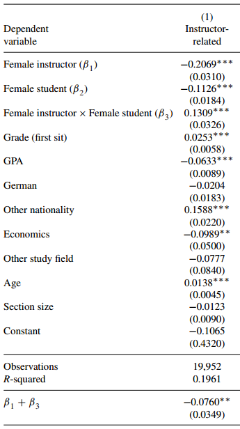

7 Experiments
By S.R. Gubitz
7.1 Introduction
Perhaps you have wondered what might have happened along a path you did not take. Or perhaps you have speculated about how differently history would turn out if some key event did not occur the way it did in reality. For example, if the Supreme Court of the United States in 2000 had allowed presidential election recount efforts to continue in Florida, might Al Gore have beaten George W. Bush to become president? Or, if you had not skipped breakfast this morning, might you feel a little less groggy right now? In practice, a path not taken is the same as one that never existed; we do not get to run history twice like a computer simulation to observe the path not taken. But, in some scientific contexts, you can observe both paths at once. This is the nature of an experiment; we get to cheat history, time, and space to observe the otherwise un-observable.
Political science finds experiments especially useful, because oftentimes the path not taken has serious political or societal ramifications. For example, what happens to voter turnout rates when political parties decide to ignore communities of color, and what might happen if they do not? In politics, many wish that they can turn back the clocks and run history twice. In political science, that is sometimes entirely possible in a experimental research design.
7.2 Background
The first recorded experiment occurred in 1835, in Nuremberg, Germany (Jamison 2019). The researchers conducting this experiment were interested in the effects of a certain homeopathic medicine: the inclusion of small amounts of salt in water. The researchers divided 100 local residents into a treatment group of 50 that received salt in a vial of water, and a control group of 50 that only received a vial of water. Participants were later examined to see the effect of the salt water on any physical ailments; the researchers found that the intervention had no effects.
It took nearly 100 years for political science to attempt its first recorded experiment (although the discipline was fairly new at the time, having just split off from history and economics). Harold Gosnell conducted an experiment around the 1924 US presidential election to test the effects of mailed postcards on voter turnout (Gosnell 1927). Gosnell sent out postcards to certain wards, randomizing which half of the ward would get the postcards and which would not. He found modest effects, setting the stage for future work on randomized get-out-the-vote (GOTV) efforts.
But Gosnell’s work was not immediately appreciated by political scientists, and it took nearly another 60 years before serious experimental work began to be taken seriously in the discipline. Shanto Iyengar, Mark Peters, and Donald Kinder invited participants to watch television news programs at the University of North Carolina, Chapel Hill (Iyengar, Peters, and Kinder 1982). What the participants did not know, however, is that they were randomly assigned to watch some newscasts that had been edited to emphasize certain stories over others. These manipulations resulted in the control group assessing the president’s performance differently, based on the issues they were exposed to in the television news program.
And from that point, experiments began steadily becoming a mainstay research method in political science. The figure below shows the number of experiments published every year in the Americans Political Science Review, one of the top publications in political science. As the figure shows, following Iyengar, Peters, and Kinder’s work in the 1980s, experiments started to be published in this journal at an increasing rate. However, it is important to keep in mind that experiments are not even close to being the dominant research method. If you have already read \[ch06\], then you already know a good deal about the most dominant quantitative research method: surveys.
Note: totals are aggregated per decade. Source: Druckman, James N., and Donald P. Green, editors. N.d. Advances in Experimental Political Science. New York: Cambridge University Press
\[fig:my\_label\]
7.3 Method: setup/overview
Experiments, or RCTs (randomized control trials) as they are often called, involve the randomized assignment of individuals into one of two groups (in the most basic design): a treatment group group that receives some intervention; and a control group that does not. This design allows the researcher to determine the effect of some intervention (e.g., individualized tutoring) by comparing the value of some outcome (e.g., test scores) in the treatment group to the control group that did not receive the intervention. Do note, however, that most experiments have several treatment groups and some even have several control groups depending on what they need to make their comparison to.
It is important to differentiate the random assignment necessary to conduct an experiment from the random sampling you learned about in \[ch06\]. In that chapter, it was explained that random sampling is when you randomly select individuals from some population you are interested in studying to be a part of your survey. But random assignment has nothing to do with that sampling technique. Rather, random assignment means taking your sample, however it was collected, and randomly assigning them to your treatment group(s) or control group(s). This random assignment is necessary to ensure that the treatment and control groups have nearly the same odds of being comparable to each other in terms of demographic characteristics of your overall sample. So, if you have 50 African Americans in your sample of 250 people, and you have four treatment groups and one control group, then random assignment should result in groups of near 50 people each, with 10 African Americans per group.
A consequence of this requirement that the sample be randomly assigned to experimental groups means that how the sample was collected is less important. This, again, is a deviation from what you learned about surveys in \[ch06\], where sampling mattered a great deal. But a good experiment can rely on what is called a convenience sample, or a sample that is made up of easy to reach people. For instance, for much of the 20th century, researchers often placed newspaper advertisements to construct their samples. Nowadays, however, there are entire online services built around getting researchers participants for their experiments. But these convenience samples do not undermine the legitimacy of the experiment, unless the researchers are trying to generalize to a certain population. If you had a convenience sample of your friends and family, you would be hard pressed to say that any results from an experiment on that sample could generalize to the population of a country.
7.3.1 Check-in Question 1
Is "random assignment" another way of saying "random sampling" and vice versa? If not, how are they distinct from one another?
7.4 Method: detail (types of experiments)
As you can probably gather from the few examples provided so far, there are many different types of experiments. Each offer their own unique way of answering certain scientific questions that the others cannot. In the following sections, we will review four types of experiments and example from political science for each.
7.4.1 Surveys vs Survey Experiments
The growth of online survey platforms, such as Survey Monkey and Qualtrics, have resulted in a similar growth in the use of survey experiments. While you might already be familiar with surveys thanks to \[ch06\], it is important to differentiate survey experiments. That is, survey experiments are experiments that are embedded in surveys. Within such a survey, participants fill answer questions and read materials just as they would in any survey. But at some point, respondents are randomly assigned to a treatment or control group.
What is advantageous about experiments embedded in a survey like this is that it is extremely easy to do. Because the surveys are often disseminated online, that means the researcher does not need a physical space where the experiment will be administered. Further, survey respondents are quite easy to obtain while providing modest compensation. Survey firms like YouGov provide samples to respond to researcher-provided surveys for a few dollars a respondent; the samples can even be constructed in ways that resemble national representativeness without true random sampling. For the more-frugal researchers, survey experiments can be administered on Amazon’s Mechanical Turk (MTurk) service, which people perform various tasks online for monetary compensation; these are usually menial tasks like testing website functions. But, in recent years, political scientists have been using MTurk to disseminate their survey experiments, as the service is far more affordable than a professional survey firm.
For all of its advantages, survey experiments suffer from the limitations of their medium; that is, a researcher can only craft treatment interventions that can be disseminated via survey materials. Oftentimes, this means text-based treatments that require the respondent to read (a burden that any undergraduate student can sympathize with); this can be troublesome when the researchers cannot prove the respondents read the treatment text, leading to false conclusions about the effectiveness (or lack thereof) of the experiment. Also, survey experiments rely on self-reported outcomes to draw their conclusions, which means that the respondent respondent was allowed to report how they felt or thought at that time. This is problematic if there is greater incentive to not be entirely forthcoming on the survey, or if people are simply bad at assessing certain psychological states (e.g., "how angry are you right now on a scale of 1-7?").
For example, Dingding Chen, Chao-yo Cheng, and Johannes Urpelainen (D. Chen, Cheng, and Urpelainen 2016) study how different ways of framing renewable energy in China affected Chinese citizens’ support for such programs. They disseminated a survey online to over 2,000 Chinese citizens collected by a professional company (i.e., this was a convenience sample). Respondents were assigned to one of eight groups (six treatment, two control) that varied the argument being used to support or oppose greater investment in renewable energy in China. They measured support for greater investment on a 1-5 scale, with 5 being the highest support. The researchers find that support was at its highest when respondents were exposed to a frame that presented greater investment in renewable energy as a means of energy security, rather than as a means of combating global warming or air pollution.
While this finding is only possible thanks to an experimental design, it is also only feasible with the sample size they had (n = 2,000) because of how cheap and efficient survey experiments can be. But, we should ask whether or not the weaknesses of survey experiments harmed the study in question. For instance, since support for renewable energy was self-reported, might there have been some degree of bias toward greater support, regardless of the respondents’ true feelings? But, because this is a survey experiment, we can never be entirely sure that the respondents were truthful in their responses. But simply, survey experiments remove a great deal of control from the experimenters.
7.4.2 Laboratory Experiments
While survey experiments lack control of the environment in which the experiment takes place, laboratory experiments exercise near-complete control. These experiments take place in controlled environments, or a laboratory. Usually, for university professors, this means some room that their department or university provided for that purpose. But, oftentimes, labs can be made out of just about any room, so long as the experiment is not disturbed. In fact, recent research has tried taking mobile labs to communities that have been traditionally difficult to reach, all in order to better study and understand those communities and the people living in them (???).
The greatest advantage of the laboratory experiment is that the researchers have a greater degree of control than in survey experiments. They can ensure that treatment is administered correctly, and that the people participating in the experiment are actually people and not automated survey takers (a serious concern for some online surveys). Further, while survey experiments are limited to mostly text-based treatment designs, laboratory experiments can be far more inventive. One of the classic reasons to conduct a laboratory experiment is because the research question requires studying some complex social interaction. A lab allows for researchers to create a physical space in which they can observe nearly real-life social interaction. And one last benefit of this method is that researchers can directly observe and record real behaviors and speech, and are not limited to self-reported attitudes in the same way survey experiments are.
That being said, the inherent problem with lab experiments is finding the people to fill the lab with. As opposed to ease in which a survey can be filled out, participants in a lab experiment must actually travel to and from the lab in order to participate. This may sound trivial, but imagine the difficulty and expense for some to travel to lab sites. In some international contexts, lab experiments can be extremely costly because proper compensation must sometimes cover people’s missed wages from a day’s work. This end result of this is that lab experiments usually have rather small sample sizes, usually somewhere between 100 and 200 participants. Compare that to the thousands of participants that a survey experiment can garner for roughly the same cost and you begin to realize the issue with wanting to exercise greater control. Smaller sample sizes often mean fewer people per experimental group, which means less statistical power to calculate meaningful effects.
Again, it is worth noting that some questions are answerable in a lab setting. For example, Ismail White, Chryl Laird, and Troy Allen (White, Laird, and Allen 2014) conducted a lab experiment two months before the 2012 presidential election between Barack Obama, a Democrat, and Mitt Romney, a Republican. This experiment took place in a historically black college/university (HBCU), which gave the researchers access to a somewhat unique sample of exclusively young African American living in a Black institution of higher learning. This was a boon for the study because they were interested in seeing whether economic self-interest could undermine these young people’s partisanship. African Americans in the United States are largely members of the Democratic Party (over 80 percent), but these researchers were interested in testing the limits of this partisan loyalty.
Participants were brought to the lab and instructed after a brief interview to allocate $100 between the two candidates running for President, Obama and Romney. What they did not tell the participants (aside from the money not actually being donated) was that some were randomly assigned to a cue that told them that for every $10 they gave to the Romney campaign, the participant would receive $1 for themselves, paid in cash. This meant that participants in this condition, if they gave all $100 to Romney, thus undermining their likely Democratic Party loyalty, they would receive $10. But what made this lab experiment unique was the inclusion of another treatment group, identical to the economic incentive condition, that stipulated that their donation amounts would be made public in the university’s student newspaper, thus revealing their behavior to their peers; this is the type of social interaction that is often impractical to replicate in a survey setting. Ultimately, those in the control group donated an average of $90 to Obama, while those in the economic incentive condition’s average was $68, and those with the additional stipulation had an average of $86. In short, because of the lab setting, the researchers could leverage the presence of a Black institution in the minds of young African Americans to potentially dissuade them from giving into their economic self-interest.
7.5 Check-in Question 2
What is the primary disadvantage of conducting a lab experiment, compared to a survey experiment?
7.6 Field Experiments
Oftentimes, researchers do not have the liberty of controlling where and when they want to conduct their experiments. For instance, if you want to conduct an experiment that tries to increase Asian American voter turnout in Los Angeles, that means that you necessarily have to conduct the experiment weeks or months before the election in question. These experiments are what are called field experiments, or experiments that take place in the physical location you are interested in studying.
The biggest advantage of this sort of experiment is that sometimes they are the only option and offer a unique means of gleaning certain information about the real world. That is, these experiments are much closer to observing real world behaviors and outcomes than survey and lab experiments, in most cases. However, a serious downside of a field experiment is that they are incredibly expensive to run, even more so than a lab experiment. These experiments often involve many researchers who must be compensated, and treatment materials that often bear an additional cost than simply an online survey. For instance, even if you have disseminating a survey in the field, you either have to print it and collect those finished surveys via pre-paid mail, or bring a tablet device for participants to use there. Needless to say, the costs quickly add up and the sample sizes can vary quite a bit depending on available resources.
But in those instances where there is no other option, a field experiment can find incredible results. For example, Victoria Anne Shineman (Shineman 2018) conducted a field experiment in San Francisco, CA during a 2011 local municipal election. Shineman wanted to study how voter mobilization efforts not only increased voter turnout, but also voter knowledge. She invited 178 subjects to complete two surveys, one before the election and one afterward, in exchange for $25. It was during the first survey that Shineman randomly assigned participants to receive different types of mobilization assistance (or none at all for the control), some of which included the necessary forms to register to vote. After the election, Shineman found that not only had mobilization been increased as is typical in these GOTV experiments, but that those exposed to mobilization efforts also exhibited greater political knowledge than those in the control, as measured by the second survey conducted after the election. Without being able to go into the field like this, Shineman could not answer the question of whether mobilization effects spilled over to political knowledge, as this would be impossible to glean from just a survey or in a lab. However, it is worth noting just how expensive this study was for the researcher; the amount of resources required to conduct a field experiment is a serious disadvantage.
7.7 Natural Experiments
The final major type of experiment to review is one that is the most infrequently used by political scientists, and not for lack of trying. Natural experiments are experiments that are not exactly conducted by the researcher; that is, the randomization process necessary to call it an experiment was done by someone or something other than the researcher. This could be an "act of God," like a natural disaster’s effects on voter turnout, or a local municipality’s property tax’s effects on desegregation efforts in the local school system. No matter how the randomization happened, if it was not the researcher who did it, then it is a natural experiment.
The advantage of analyzing a natural experiment (again, it is not accurate to say one "conducts" a natural experiment) is that the outcomes observed could not be any more realistic. In social science contexts, natural experiments produce effects on real people in the real world; the stakes are at their highest. However, there are a whole host of problems that come attached to a natural experiment. First and foremost, because natural experiments are conducted by nature or some third party, that means that you have to find the natural experiments that have already happened. This entails identifying the cause, some manner of measuring who was affected by the cause, and some manner of measuring the outcomes you are interested in. If any of that information is unavailable for any reason, you cannot analyze the natural experiment. Further, and again because of the nature of natural experiments, the randomization process may not be truly random, especially when it comes to policy decisions, which are informed by political processes that are hardly random.
Consider, for example, Maimonides’ Rule and its effects on educational outcomes. Maimonides was a rabbinic scholar in the 12th century who posited that the maximum class size was 40 students per instructor, as any more than that and the single instructor would be overwhelmed. Israel adopted this informal rule and codified it in its public school system such that any class with 41 students or more received an additional instructor. Joshua Angrist and Victor Lavy (Joshua D. Angrist and Lavy 1999) identified this as a possible natural experiment. After all, the difference between classes of 40 and 41 students was essentially random, but it had the potential to affect educational outcomes like test scores. It stands to reason that going from a 40:1 student-teacher ratio to a 20:1 ratio is a meaningful difference. the researchers, when comparing the test scores of these classes just on the cusp of the 40-student cutoff, found that test scores were higher for the classes just over the limit who had a better student-teacher ratio.
But, let us consider the potential issues with this research design. First, we need to ask ourselves, was the assignment treatment truly random? In this case, treatment was receiving the extra teacher while only gaining a small increase in the total number of students. What would happen if certain parents were able to take advantage of Maimonides’ Rule and bend the rules of their public school to get their child into these classrooms with a better student-teacher ratio? Randomization would be broken because students being assigned to the treatment group would likely be from families from better socioeconomic backgrounds (i.e., parents capable of moving their children to advantageous classes are more than likely well to do, financially). This means that the natural experiment was not really an experiment at all and that the researchers were finding a spurious relationship, or a relationship between treatment and outcome that was better explained by some confounding factor. Indeed, the same researchers went back to replicate their research and found that recent research that tried to replicate the original study have found artifacts of such manipulation of an otherwise clever natural experiment, leading to null effects once accounted for (Joshua D Angrist et al. 2017).
- What steps must be taken to conduct a natural experiment?
7.8 Advantages of Method
What is hopefully made clear in the above review of the major types of experiments is that experiments are versatile; as long as you can randomize your participants into different groups and measure outcomes, you can conduct an experiment. And perhaps the greatest advantage of experiments over other methods of social inquiry is that experiments are the best at causal inference, bar none. Because of the randomized assignment process, you can often be confident that an analysis that compares the outcomes between treatment and control groups is measuring the causal effect of the treatment (the dependent variable) on the outcome (the independent variable). This means that experiments often have very good internal validity, or answering the question of whether the independent variable is actually affected by the dependent variable and not some unseen confound. However, as noted in the section on natural experiments, this is not always the case.
In short, no other research method in this textbook is quite as good as a simple experiment at assessing causality or at achieving good internal validity. Better yet, there are no complicated statistics necessary to analyze the results of experiments, in most cases anyway; just a simple comparison of averages.
7.9 Disadvantages of Method
That being said, there are plenty of disadvantages to be aware of when it comes to experiments. While they are often seemingly easy to design, the reality is less so. A great deal of work must be taken on the front-end to ensure good construct validity, or the ability of the experiment to actually speak to the theory or research question at hand. Just because you can design an experiment easily does not mean that it is necessarily the best approach or that it will provide good evidence for your hypotheses. The study of the effects of Maimonides’ Rule on educational outcomes is a great example of a clever experimental design that, upon closer inspection, is not actually measuring the effect of this rule on test scores; rather, it is testing the effects of wealthy parents’ ability to get their children into ideal classrooms.
Further, and most importantly, a flaw of experiments is their often weak external validity, or whether the experiment’s results can be generalized beyond the case being studied. Sometimes we have to seriously worry about the artificial settings we place participants in during an experiment. Consider the modal survey experiment: how often are you really assessing your own attitudes on certain political subjects on a 1-5 scale, or reading news articles about issues you do not really care about, like oil pipelines? Or, better yet, consider the lab experiment example discussed above: how often do you go into a strange room, and donate $100 given to you by strangers among two different presidential candidates, and how often are you being cash payouts for supporting a particular candidate over another?
Few of the activities asked of experiment participants are realistic in any sense, but some types of experiments are inherently better suited to good external validity than others. As discussed above, field experiments and natural experiments usually have much better external validity than their counterparts because the effects being measured are on actual human behavior in real-world situations. Further, recent work finds that external validity may not be a serious concern for some survey experiment designs, as some findings from artificial settings have been found to better approximate real-world equivalents (Hainmueller, Hangartner, and Yamamoto 2015). In Table 1, you can compare and contrast how each major type of experiment we reviewed performs on construct validity, internal validity, and external validity; note how across all of them, construct validity varies because it is largely incumbent on the researchers to design good experiments that speak to what they are interested in studying.
| Lab Experiment | Field Experiment | Survey Experiment | Natural Experiment | |
|---|---|---|---|---|
| depends | depends | depends | depends | |
| high | depends | high | low* | |
| low | high | high | high* |
- What is the difference between external and internal validity?
7.10 Broader significance/use in political science
Experiments, as you have seen throughout this chapter, are a flexible research method with some limitations. It is important to note how you will likely encounter experiments in your studies and in the real world. While experiments can vary in sample size, experiments are often only conducted once, and even when they are conducted again, it is rarely on the same sample as the first time. This means that experiments provide snapshots of political processes, results that are very likely time-bound in the moment and political situation in which they are captured. All of this means that you are unlikely to see the same experiment repeated over time. Some researchers mitigate this feature of experiments by using them to complement their other research methods conducted to answer the same question. For example, you could conduct a focus group to understand how a group of women engage with news media, and subsequently conduct an experiment to verify their stated behaviors and preferences. This means that experiments do not always need to be the only research method used in order to answer complex questions about politics.
7.11 Conclusion
We do not get to run history twice to see what might be different along a path not taken; that is just common sense. But, in some scientific contexts, we can effectively cheat history and observe both paths at once to determine the effect of some cause. This is thanks to the experiment, the best research method available to us to assess causal effects. It is a research design with as many forms as there are minds to imagine them, and with little exaggeration. However, that does not mean that experiments are always the best research method for the question at hand, and it does not mean that other research methods cannot perform better in some areas than an experiment. Experiments are deceptively easy to design and conduct, but great care must be taken in order to design a meaningful experiment that actually measures the effects it is supposed to, and can be generalized to the world outside an artificial setting like a lab or survey. What we, as scientists, are trying to do is study complex social interactions and the messy process of politics. Experiments allow us to answer some questions about those messy processes, but it is not a supplement for good theory and brilliant thinking.
7.12 Application Questions
7.12.1 Application Question 1
Given what you know about the different types of experiments, what type of experiment was the first recorded experiment (the one on homeopathic medicine at the start of the chapter)?
7.12.2 Application Question 2
Suppose you wanted to provide evidence that huge changes in average temperatures affected people’s perceptions about climate change. Briefly describe how you would design an experiment using one of the four types discussed in this chapter in order to do so.
7.13 Key Terms
Totally fine to add/subtract terms – just check with me as there are pre-designed quizzes to accompany the text!
control group (x)
construct validity (x)
convenience sample (x)
external validity (x)
field experiments (x)
internal validity (x)
lab experiment (x)
natural experiment (x)
spurious relationship (x)
survey experiment (x)
treatment group (x)
7.14 Answers to Application Questions
7.15 Answer 1
The experiment on the effects of homeopathic medicine was primarily a field study, but one could argue that it was a lab experiment as well because treatment and control were administered in a controlled environment. So, in other words, this was a so-called "lab in the field" experiment. These are common in political science, especially in recent years as the need to study difficult-to-reach populations has increased.
7.16 Answer 2
Example responses:
Survey experiment: providing some respondents with information about above average summer temperatures and below average winter temperatures and comparing their attitudes toward climate change to those who did not receive that information.
Lab experiment: put people in a particularly warm room on a hot summer day and see if their attitudes toward climate change are different than those in a different, air-conditioned room.
Field/natural experiment: go to areas experiencing huge shifts in average temperatures and compare people’s attitudes toward climate change in these areas to those in areas whose temperatures have remained stable over time.
7.17 Large N
By Maximilian Weylandt
7.17.1 Introduction
This chapter introduces the most common methods for working with ‘large-n’ data, or data where we have a lot of cases. If we want to study a phenomenon across more than 100 countries, or have a survey covering thousands of respondents, it’s simply not possible to look at them one by one in great detail. Even if we spent a lot of time and effort to do so, we would struggle to make a systematic comparison because it’s difficult to keep track of all the relevant information with so many cases.
Two techniques, discussed here, help us in learning about the relationship between variables across a large number of cases. First, we’ll discuss the concept of correlation, a term you will have heard before. It essentially describes if two variables ‘move together’: when one goes up, does the other one go up as well?
Next, we turn to regression, a more powerful tool for identifying associations between variables. Regression is the basic workhorse of quantitative political science (and many other disciplines as well), and understanding linear regression is important to understanding the many methodologies built as extensions of this basic method. We begin with a bivariate regression relating one explanatory variable to a response variable to look at the logic underpinning regression. The basic idea is that we find one equation that best describes the distribution of our data points, and therefore at a glance tells us how our two variables are related.
Then we move on to variations of regression, how to interpret regression results, and examples of how the method is used in political science.
7.17.2 Method: setup/overview
7.17.2.1 Correlation
You have two variables that you think might be related in a linear fashion. Let’s say you think that a country’s level of education (measured in expected years of education) will be related to its level of gender equality (we’ll use a points system based on the UN gender inequality index) . Using software, you can quite easily calculate a linear correlation coefficient for these two variables, denoted by \(R\). For these two variables, we get the result \(R=0.83.\) That number is a bit abstract but the graph below, \[fig:largen\_correlation\], visualizes what different correlations look like.
Different correlations, visualized. The numbers represent correlation coefficients. Based on Boigelot (2011), modified by Max Weylandt.
\[fig:largen\_correlation\]
Correlation coefficients can range from -1 to 1. Imagine that the different graphs in figure \[fig:largen\_correlation\] represent the different possible relationships between education (along the \(X\)-axis) and gender equality (on the \(Y\)-axis). As the top line of figure \[fig:largen\_correlation\] shows, a correlation coefficient closer to either pole means a strong correlation while a number around 0 means a weak correlation. If \(R=-0.8\), there is a strong negative correlation (at larger values of X, Y tends to have lower values). If \(R=0.4\), there is a moderate positive correlation (at larger values of X, Y tends to have higher values). The correlation we got indicates that we have a fairly strong positive correlation. In other words, countries with higher levels of education tend to have higher gender equality overall.
But also note the difference between the two lines in the graph above. In the bottom line, every image represents a perfect correlation, even though the relationships between \(X\) and \(Y\) are clearly very different. On the first graph from the left, \(Y\) increases a lot as \(X\) moves from its lowest to its highest value. Two images over, \(Y\) still increases as \(X\) does, but much less so. They both move in the same direction perfectly (they have a correlation coefficient of \(R=1\)), but the slopes are different. This has implications for our findings: is gender equality slightly higher in countries with more education, or a lot higher? Correlation cannot answer that question. Later, we’ll see how regression accounts for this difference in slopes. By the way, it is always a good idea to visualize your data. The graphs in figure \[fig:largen\_datasaur\] below show three datasets that have almost identical means, medians, and correlations - yet look quite different when plotted.
Based on the ‘Datasaurus Dozen’ by Matejka and Fitzmaurice (2017)
\[fig:largen\_datasaur\]
Correlations can easily be calculated with statistical software, and the number of datasets available to researchers has exploded in recent years. This means that, now more than ever, you can conduct exploratory analyses with a large number of variables to see which ones are related to each other or the outcome you are interested in. This process, of looking at large number of variables and seeing how they relate, is sometimes called data-mining. Data mining can be an acceptable part of an inductive theory-building process (see \[ch02\]), but it is a fraught process: when looking at a large number of variables you are bound to find some that show a relationship, and it can be tempting (even subconsciously) to write up only results that confirm our hypothesis rather than those that don’t.
Check-in Question 1: What does a correlation coefficient tell us? What does it not tell us?
7.17.3 Regression
Correlations are a useful first look at the relationship between two variables, but linear regression is far more powerful. The intuition behind linear regression is simple: we want to find the line that best fits all of our data points. This is because the line that fits the data best summarizes the relationship between variables, and we can use this line to learn not just the direction of an association (positive or negative) but also its strength: as \(X\) changes, how much does \(Y\) tend to change? Regression also lets us conduct significance tests to establish whether the relationship between variables actually exists or just appears to occur due to chance.
A simple scatterplot
Perhaps it’s best to start with an image. Figure 1 charts the values for 147 countries’ expected years of education against their scores on the equality index, with each country represented by a dot. Just from looking at it, you can see that countries with a high level of education tend to have higher levels of overall gender equality, even if not all countries neatly fit that description. In other words, as predicted by our correlation coefficient of 0.85, it seems that there is a relationship between education and gender equality. But how strong is this association?
To answer the question, we draw the line that best fits the data points in the scatterplot. This straight line (this is linear regression after all) summarizes the relationship between the two variables we are interested in. Imagine we wanted to explain the relationship to someone else but couldn’t show them the individual data points. We could still show them the line and they would get a sense of how gender equality and education relate.
The regression equation takes the form: \[Y = a + bX\]
Take a second to appreciate what we have done here. We’ve taken data on two variables for 147 countries, and summarized it with one line on the graph, which we can in turn express as this simple formula. The formula may look familiar to you, as it is simply the formula for a straight line. should I say linear equation? In the above equation \(a\) is the intercept – the value \(Y\) takes on when \(X=0\). In other words, what is the level of gender inequality that a country with 0 years of expected schooling would have? \(b\) is the slope. Remember the function the slope plays in a graphs: it gives you ‘rise over run’, telling you how much the \(Y\) tends changes in relation to the \(X\). This means that in a regression equation, the slope is very important, because it expresses the relationship between our variables: on average, a one-unit increase in the X variable (in our case, one year of extra expected schooling) is associated with a \(b\)-sized increase or decrease in the outcome variable (points on the gender equality index). The slope \(b\) is often also called the regression coefficient. In the case of our regression line, \(b=11.6\). As you will see below, we often encounter regressions with multiple variables, each of which has its own coefficient (i.e. change in the outcome variable associated with change in the independent/input variable).
In our example, the intercept \(a=-89.2\). This is a good time to warn you about extrapolating using data from regression. That intercept is impossible, because the way our outcome variable is set up, there are only positive scores for equality. Yet because of the best fit line, our regression predicts an impossible value for \(Y\) when \(X=0\). Always remember that regression fits the line based on the data available. If you want to use it to make prediction about data points far away from the data you actually have, it is possible the prediction will be way off. (By the way, you can find the values for both \(a\) and \(b\) in \[table:largen\_results\] below. We’ll discuss how to interpret the table in more detail below, but feel free to see how much you can get from it right now).

The regression line
7.17.4 Method: detail
7.17.4.1 Finding the Line of Best Fit
How do we find the line that fits the data best? Let’s restate our aim: we want a line where, given a certain \(X\) value, the \(Y\) value predicted by the line is really close to the actual value in the data. That seems like a reasonable definition of ‘good fit.’ Rephrased in mathematical terms, we want to be as small as possible. The thing we want to minimize, , is called a residual. For example, in figure 3, Serbia has an expected years of schooling value of \(14.6\) and a gender equality score of \(106\). Those are the actual values in the dataset. However, the regression line predicts that an education (i.e. \(X\)) value of \(14.6\) is associated with a gender inequality score of \(82.94\) \[$Y= a+ bX= -89.2 + 11.6 \cdot(14.6) = 80.16$\]. The residual amounts to \(25.4\) \[$106 - 80.16=25.4$\], and is highlighted with a blue line in figure 3.
Visualizing Residuals
We take a cumulative look at all of our residuals to see which line fits best. There are several possible methods for doing this. Simply adding up the residuals would give us misleading results: some are negative and some are positive, and they would cancel each other out. To deal with this problem we square each residual. This makes all values positive, and has the added benefit of penalizing larger differences between our line and actual values. We find the line that best fits our data by minimizing the squared residuals. This procedure is called ordinary least squares.
The line you see in figure 3 is the line of best fit. Still, as you can also see, there are residuals. This is because in linear regression we are trying to find one single straight line to best predict the data, which always results in some points being off the line. A line that hits all points is possible but its equation would be so complicated it would be impossible to interpret. The key is that any other line would have residuals that are overall further away. The image below shows how different lines have drastically different squared residuals.For an interactive example that lets you adjust the line and see how the squared residuals change, check out the second image on this page.
Placeholder: if time, add animated gif on residuals for charts
As you can see, we can draw an infinite number of lines through our data, but the one where the squared residuals are lowest is the line of best fit – the line that best describes the relationship between our variables X and Y.
Check-in Question 2: Why do we want to fit a line through our scatterplot?
7.17.5 Significance Tests
Regression lets us test whether the relationship between our variables is statistically significant. We begin by setting up a hypothesis test in the format with which you are already familiar. Our null hypothesis is that the relationship between variables \(X\) (education) and \(Y\) (gender equality) — AKA the coefficient \(b\) – is zero.
In our example, we find a beta that is not zero, \(11.6\) in the bivariate regression we conducted. How weird is this? We can calculate how unlikely it is to get \(11.6\), if \(b\) is actually 0 like our null hypothesis stipulates. This calculation gives us a p-value for the coefficient. If the p-value is lower than a threshold we set ahead of time, we call the coefficient statistically significant. This just means that we have a high degree of certainty that \(b\) really is not zero.
You can see the details of this calculation in the .
Another way of approaching this issue is to calculate a 95% confidence interval for the coefficient – a range for which we have 95% certainty that the coefficient falls within its confines. In our example, the 95% confidence interval for the coefficient \(b\), which captures the association between education and gender equality, is \([10.4, 12.8]\). (You can see the calculation in the ). If the entire range is positive (as it is for us) or negative, it means that we are 95% certain that the true coefficient is not zero. The null hypothesis says that there is no relationship between \(X\) and \(Y\). But our interval is so far away from zero that we can feel save rejecting the null hypothesis.
7.17.6 Multivariate Regression
As social scientists, the phenomena we investigate are usually very complicated, and we seldom deal with bivariate relationships alone. In terms of our above example, there are many factors other than education that could affect gender equality. For example, what if wealth is the variable we are looking for, not education? What if it’s simply countries where people are wealthier that have higher levels of gender equality?
A bad way of addressing this issue would be to simply run a second regression, looking at the relationship between wealth and gender inequality, and then compare the results. If we do this, we miss potential relationships between all of our variables. (You may remember this discussion from \[ch02\]). Maybe wealth brings more education and also more gender equality, explaining why we think we see a relationship between education and equality. If we are just looking at the effect of education on equality, we are probably giving education credit for some of the variation in equality that is due to wealth. Education’s actual effect would be lower. This is a general rule: When we leave out variables that affect our main relationship, we tend to overestimate the regression coefficients of the variables in our regression. This is called omitted variable bias: leaving out relevant variables results in faulty (usually inflated) estimates.
Luckily, regression allows us to control for other variables. At this point it becomes harder for us to rely on graphs: representing two variables on a graph is easy, but once we add more we are dealing with too many dimensions to represent on a screen (or grasp with a human brain, at some point!). What you need to know is the following: we can remove the influence other variables have on the outcome variable and look at the effect of only our variable of interest. When you read a paper that talks about “controlling for" or”keeping constant" other variables, this is what they are doing – once we have accounted for the variation in the outcome explained by ‘control variables’, what is the relationship between the variable we care about and the outcome? The neat thing is that the output we get from running a multiple regression doesn’t just report on our main variable and the outcome, now controlling for other factors. Instead, it gives us the association between every single variable and the outcome, controlling for all the other variables included in the calculation. Thus including several variables in one regression is desirable for two reasons: first, because we simply want to know the effect of several variables, and second, because leaving out relevant variables would give us less accurate results.
A multiple regression with two explanatory variables can be written as: \[Y = a + b_{1}X_{1} + b_{2}X_{2}\] Academic papers will often use \(\beta\) instead of \(b\), \(\alpha\) instead of \(a\), and sometimes even write variable names directly into the formula. In terms of our example we could write: \[Ineq = a + \beta_{1}EDU + \beta_{2}GDP\]
Here, \(\alpha\) is the intercept (the value of gender equality we predict when both education and GDP are at \(0\)), \(\beta_1\) tells us what change in gender inequality is associated with a 1-unit increase in education, and \(\beta_2\) tells us about the association between GDP and education.
Check-in Question 3: why do we control for other variables?
7.17.7 Reading a Regression Table
When reading quantitative papers, chances are you will read a regression table. Reading regression results is a key skill for engaging with political science research. It will save you a lot of time, giving you results at a glance, and help you critically compare the actual results of an analysis with the findings the authors present.
Let’s look at a regression table that shows the results of our analyses, \[table:largen\_results\]. As you can see, each variable gets its own row – often the main variable of interest is in the top row. Also, each model gets its own column. Broadly, a model is a different way of looking at the statistical relationship between our variables. In our case, model just refers to different combinations of variables. Other times, different models can feature more complicated differences in statistical calculation. Column (1) shows the results of our first model, which is the simple bivariate regression we began with. Here, in the line for expected years of schooling, you can see the f the variable. You interpret this as discussed above: a one-unit increase in the variable (education) is associated with a 11.6 unit increase in the outcome variable (gender equality). In other words, one extra year of expected schooling is associated with an almost 12 point higher score on the gender equality index.
\[table:largen\_results\]
(1) (2) (3)expected schooling 11.63\(^{***}\) (0.62) 11.57\(^{***}\) (0.62) 6.49\(^{***}\) (1.02) migration 0.27 (0.29) $-\(0.16 (0.27) GDP/capita (log) 15.74\)^{}$ (2.67) Constant $-\(89.19\)^{}$ (8.54) $-\(88.37\)^{}$ (8.59) $-\(164.56\)^{}$ (15.02)
Observations 134 134 134 Adjusted R\(^{2}\) 0.73 0.73 0.78
Note:
——————– ————————- ————————- —————————
The little asterisk next to the coefficient is a very common symbol to denote statistical significance. A legend at the bottom of the table (as in our example) will explain what different symbols mean , but the standard meanings are shown in Table \[table:p\].You can see that education is statistically significant at the 0.01 level - we are quite certain the coefficient is not zero, and therefore quite confident that there is an association between education and gender equality. Right next to the coefficient and the asterisks is the standard error - our measure of uncertainty regarding our estimate of the coefficient.
hr5cm
| Symbol | P-value below |
|---|---|
| \(*\) | 0.1 |
| \(**\) | 0.05 |
| \(***\) | 0.01 |
Column (2) shows the results of a second model where we also add the net migration of a country. We can also read the association with this variable from the table: the ndicates that a 1-unit increase in the migration index results in a 0.27 increase in the gender equality index holding all other variables constant, but the finding is not statistically significant.
In Column (3) we add GDP/capita to account for different levels of wealth, and you can see that the s substantially lower than in the previous two models. The table indicates that a one-unit increase in education is now associated with a 6.5 point increase in gender equality, holding all other variables constant. This change in coefficient illustrates the problem of omitted variable bias. Before we explicitly looked at the relationship between wealth and gender inequality, we were giving education too much credit. It seems that GDP explains some of the variation in gender equality that we had previously attributed to schooling. Indeed the s sizable and statistically significant.
\[table:largen\_results\_hl\]
(1) (2) (3)expected schooling 11.63\(^{***}\) (0.62) 11.57\(^{***}\) (0.62) 6.49\(^{***}\) (1.02) migration 0.27 (0.29) $-\(0.16 (0.27) GDP/capita (log) 15.74\)^{}$ (2.67) Constant $-\(89.19\)^{}$ (8.54) $-\(88.37\)^{}$ (8.59) $-\(164.56\)^{}$ (15.02)
Observations 134 134 134 Adjusted R\(^{2}\) 0.73 0.73 0.78
Note:
——————– ————————- ————————- —————————
The coefficient of our main variable of interest - education - changes a fair amount when we change the model. When an association remains despite us changing the models around, we say that it is robust. If our variable remains significant across different models, it gives us more confidence that the association is actually there. If introducing control variables means that the main interest is not significant, we would question whether our association is actually there or not. There is no hard and fast rule for judging robustness. In our case, controlling for GDP did mean that the effect size of education went down by quite a lot. This is somewhat worrying. On the other hand, education did retain a statistically significant association throughout.
You’ll note that the variable is called GDP/capita (log). This reflects a common practice when dealing with GDP, which is to convert the values first before using them in the regression. This is statistically sound, but makes interpretation more difficult – see the for more details if you are interested.
The final line among our variables, Constant, denotes the intercept. Sometimes this is at the bottom, sometimes at the top of the table. We already discussed how to interpret this: if all \(X=0\), the regression line predicts that \(Y\) will equal the value of the intercept.
Let’s move further down the table. The \(\mathbf{R^2}\) tells us how much of the variation in Y is explained by our regression line. The regression line above (model 1 in the table) has an \(R^2\) value of 0.73. This is also referred to as “goodness of fit" (i.e. how well does the data fit the line?). This \(R^2\) indicates that our regression line accounts for \(73\%\) of the variation in gender equality.
It is tempting to simply scan the table to see which variables have stars associated with them, and conclude only they matter because they have statistical significance. But statistical significance is not everything. We also have to consider substantive significance, which is linked to the size of the coefficients. If a regression shows that a variable is significant at the .01 level, but it has a tiny coefficient, what does it mean? It means the variable may well be associated with a change in the outcome variable, but that this change is tiny. As social scientists, we are studying real-life phenomena and so we should care about the substantive impact of different variables on our outcome. We want to see effects that are perceptible in real life, not just in the data! On a practical note, however, do not be surprised at small effect sizes. The phenomena we study are complex and so it often makes sense that any given factor only has a small effect. As research methods have improved over the last decades, we have seen a decrease in effect sizes which suggests some older research suffers from omitted variable bias (remember that term?)
In short, here’s how to read a regression table:
Begin with the first column and read it top to bottom. Note variables’ coefficient sizes and whether they are statistically significant.
Move to the next column and do the same. See which coefficients change and in what direction. Which coefficients are no longer significant once other controls are added or the model changes in other ways?
Track the main explanatory variable across models. Is it robust to the inclusion of controls and across different model specifications?
Compare your impressions with the descriptions of the authors. Do they discuss all relevant findings, or do they leave something out?
In recent years, more authors have begun to display regression results in a graphical way. Consider figure 4 below, which displays the result of Dionne and Horowitz’s 2016 article (Dionne and Horowitz 2016). Their regression estimates the probability of farmers receiving agricultural subsidies. The dots represent the coefficient estimates from their regression, and the horizontal whiskers show the 95% confidence interval. At a glance, you can see that two confidence intervals do not contain 0, meaning we are 95% sure that the real value of these coefficients is not 0 – they are statistically significant. We also see that their value is negative, meaning that households with a female head and those that had seen death or illness were less likely to receive aid.
This figure also shows an example an example of something you should know called a dummy variable. The term ‘dummy’ bears no relation to what these variables do: they only take two values (yes or no, 1 or 0) and can be used to compare groups. When we include a dummy variable in a regression, the output tells us the difference in average Y values across the two groups. In this example, females receive aid at lower rates than males (the two values of these dummy variables). If you look at the variables in figure 4 you will see that many of them are dummies: they denote membership in ethnic groups, partisanship, and more. Rather than interpreting the coefficient as "a one unit increase in X is associated with a \(b\) increase in Y," we think "being X rather than not is associated with a \(b\) increase in Y."

Adapted from Dionne and Horowitz 2016, 220
7.18 Applications
7.18.1 Correlation
Simple correlations are not as often found in recent scholarship as regression, mostly because regression is far more powerful and flexible than correlation, and hardly more difficult to calculate. Still, as noted above, correlations can be useful for an initial look at the data and when describing data. Take Whitaker and Lynch (2011), who are trying to understand the success of the UK Independence Party at the 2009 European Parliament Election. The first thing they do is simply to see whether support for UKIP correlates with support for the conservative or labour parties in the same geographical area, before moving on to a more sophisticated regression that relates support for UKIP to a number of demographic factors.
You will also encounter correlations in more technical sections of papers, when authors discuss which variables to use to measure certain concepts. For example, there are several different measures of democracy: Polity, the V-Dem Institute, and Freedom House all offer datasets that score each country’s level of democracy for a given year. In papers using democracy as a variable (be it outcome or explanatory), authors often pick one of them rather than running the analysis several times. They might note, however, that the indices are highly correlated – suggesting that results would be similar regardless of the dataset chosen. Below, we will look at a study by Kuenzi amd Lambright where the outcome is level of democracy. They write:
...the polity scores for these 33 cases are highly correlated with the other measures of democracy. For example, the polity scores are also highly correlated with the Freedom House total scores for 2000 (r = –0.88; higher values on the Freedom House measure correspond to a lower level of democracy). (Kuenzi and Lambright 2005, 428)
7.18.2 Regression
We are talking about large-N data in this chapter, and regression is most useful when applied to a fairly large number of cases. Some of this research takes data from different geographical or political units to look at a phenomenon across many cases, like the example about education and gender equality earlier on in this chapter.
\[table:largen\_kuenzi\]
Dependent Variable:
Combined polity score for 1999 Robust Regression Result
Constant -8.80 (2.08)*** Legislative volatility 0.047 (0.025)** Mean age of parties 0.0009 (0.063) Effective No. of Parties 1.68 (0.488)*** Change in inflation -0.234 (0.043)*** GDP per capita in 1999 0.988 (1.32) PR system dummy variable 1.29 (1.21)
Number of countries 32 Note: \(^{*}\)p$<$0.1; \(^{**}\)p$<$0.05; \(^{***}\)p$<$0.01 ——————————– ————————————————–
: Adapted from Kuenzi and Lambright, 2005, 436
Kuenzi and Lambright want to look at the relationship between party systems and the level of democracy along a number of African countries. Their outcome is a country’s score on the Polity scale, and their variables of interest are legislative volatility, the effective number of parliamentary parties, and the average age of parties.(???)
Look at Table \[table:largen\_kuenzi\] to get a sense of the results. Let’s interpret these coefficients. We can see that a one-unit increase in legislative volatility is associated with 0.047 more points on the polity index, holding all other variables constant. This is significant at the 0.05 level.
Check-in Question 4: Interpret the coefficient for the effective number of parties. What does the coefficient tell us?
7.18.3 Logistic Regression
Logistic regression is a type of regression where the outcome variable, \(Y\) can only take on two values, 1 or 0. (Our discussion about dummies earlier was focused on explanatory(\(X\)) variables).
This is what Garcia (2006) (García-Rivero 2006) does, studying respondents’ feelings about the ruling party in South Africa, the ANC. The outcome variable is whether or not voters felt close to the ANC (1) or did not feel close to it (0). He looks at several demographic indicators to see which factors are associated with support for the ANC. You will find a lot of logistic regressions of this type in the study of elections, where voting intention is often a categorical variable.
Logistic regressions are slightly more tricky to interpret than regular regressions. To illustrate, let’s look at the main table from Ferree (2006) (Ferree 2006), who wants to understand why South Africa’s election results seem to have split along racial lines. The outcome variable is whether voters intended to vote for the ANC (1) or did not plan to vote for it (0). She looks at several exploratory variables, as you can see in \[fig:largen\_ferree\]
| Support for the ANC | |
|---|---|
| Performance rating | 0.817 |
| (0.431) | |
| Believe DP is exclusive | -.196 |
| (0.611) | |
| Believe NNP is exclusive | 3.719** |
| (0.604) | |
| ANC partisan | 3.026** |
| (0.582) | |
| Female respondent | -1.454** |
| (0.547) | |
| Age | 0.040 |
| (0.126) | |
| Low schooling (no high school) | 0.998 |
| (1.016) | |
| High schooling (post matric) | -4.400** |
| (0.713) | |
| Political interest | .530** |
| (0.251) | |
| Pseudo R2 | .85 |
| N | 810 |
\[fig:largen\_ferree\]
In the second column of \[fig:largen\_ferree\], the coefficient for the variable ‘High schooling’ is -4.4. How do we interpret this? Clearly, we cannot do as we did above: we can’t say that having high schooling is associated with a 4.4 unit decrease in the intention to vote for the ANC, because the only possible values are either 0 or 1.
Instead we can do an anti-log on the coefficients to get odds ratios. What are odds ratios? If the odds of something happening are 50-50, the odds ratio is \(\nicefrac{50}{50}=1\), if they are 80-20, the ratio is \(\nicefrac{80}{20}=4\). These ratios are hard to interpret. We can convert them to probabilities, but these change depending on the value of \(X\). While the interpretation is tricky, know the basic intuition: the coefficients tell us whether the variable is associated with a higher (or lower) likelihood of observing the outcome.

Adapted from Tripp and Kang 2008, 350
\[fig:data\_Trippkang\]
7.18.4 Experiments
r3in 
You will also likely encounter papers using experiments or quasi-experiments, which also use regression. As we discussed above, we can use dummy variables to compare means across groups. In experiments, this means we can use regressions to see how the treatment affected the treatment and control groups in the experiment, but also how the effects differ for different demographic groups, which we can add as control variables.
For example, Mengel et al. (2019) study how gender affects teaching evaluations. There are by now more than 70 studies indicating that women and people of color receive lower teaching evaluations than their colleagues, all else equal. Mengel et al. use a ‘quasi-experiment’: they look at data from courses where students were randomly assigned to sections that could be taught by women or men. They write that “female faculty receive systematically lower teaching evaluations than their male colleagues despite the fact that neither students’ current or future grades nor their study hours are affected by the gender of the instructor" (Mengel, Sauermann, and Zölitz 2019, 536) The regression table to your right provides more detail on controls: economics students, for example, tend to give lower evaluations than students in other fields, and students with high grades in the class tended to give higher scores. Overall, female instructors received lower scores, as indicated by the negative coefficient on the explanatory variable.
7.18.5 Advantages of Method
Regression is flexible, relatively easy to conduct, and intuitive. It enjoys many advantages:
Results are generalizable. If the analysis is done carefully, we might be able to claim that the results we get from our analysis apply in other contexts too.
Regression gives precise results. A regression output will give effect sizes, so not only do we know that one variable is associated with another, but also how large that association is. We can also construct confidence intervals for our estimates, giving us a sense of how certain we can be about the results.
Regressions make it easy to control for other variables. We almost never deal with only bivariate relationships. Regression allows us to hold other variables constant while looking at the relationship we care about, minimizing our fear of omitted variable bias.
Regression allows for iteration. Because of the relative ease of use of regression, other researchers can easily replicate research – and build on it.
7.18.6 Limitations of Method
Measurement. One big problem of large-n quantitative research is that we can only compute statistics for variables we can measure. There are many things that have no measures (for example political will). On issues where we have measures, they are often controversial. For example, many scholars have tried to come up with databases that rate each country on a scale of democracy. But, as you have learned in ch04, coming up with a single measurement for concepts is extremely complicated and always involves trade-offs. What is a democracy in the first place? Which aspects of a society should we consider? How should they be weighed? Many subjective decisions have to be made, all of which can greatly affect the measure given – and therefore statistical results when entered into an analysis.
Average effects. Regression is useful because it gives us a handy, simple output: for each variable it gives us a single coefficient that describes how much changing this variable affects the \(Y\)-variable. However, this is the average effect across all data points in our calculation. Look again at graph 1. The line, which gives us the regression coefficient, describes the data quite well (remember, we chose it because it is the straight line that does the best job of fitting the data!). Still, we can see that for some countries the line does a much better job at predicting the actual values than for other countries. In other words, on average an increase of one unit in education is associated with a \(b\) increase in gender equality. But we should not conclude that this sort of relationship would hold for any one country we look at.
Bad application 1: unrealistic claims of causal inference. The downsides of regression come often not from the method itself, but from how it has been used. Ironically, its ease of use has led to a large amount of bad studies, because the ability to control for other variables has led scientists to feel a false sense of security. In reality, we often cannot control for all variables, either because we cannot measure them, or because it is difficult to think of all factors that might affect our outcome variable.
There are many examples of authors claiming a multiple regression shows a causal relationship, using language about “the effect of" one variable on another, and so on. These claims are often unrealistic. As you learned in chapter X, it is difficult to show causality. To show causality, we need to deal with endogeneity, including reverse causality (does Y cause X?) and omitted variable bias (is a third variable Z responsible for the relationship between X and Y we see in the data?). Another thing that can help is evidence for a mechanism through which X might affect Y. In the absence of such evidence, regression cannot show that one variable causes another.
Bad application 2: kitchen sink regressions. Another thing researchers can do is to investigate a large amount of variables until they find some relationship that either confirms their preferred hypothesis, or is at least interesting enough to warrant publication. This is similar to the practice of datamining discussed above, and is sometimes also called ‘p-hacking.’ In fact, it is what I did to make figures 2-4 above: I was interested in a clear chart and regression table, and looked at different variables until I found a combination of variables that worked. With large datasets containing many variables so easily accessible, conducting a number of different regressions is dangerously simple.
7.19 Broader significance in political science
Regression is perhaps the most commonly used quantitative technique in political science. You’ve seen that the basic regression is very flexible and gives us important information – the strength of association between one variable and another, even holding other factors constant. This is very powerful! You’ve also seen one variation of it, logistic regression, but there are many more extensions of the basic concept for a variety of applications. Regression is used to analyze survey data, compare trends across place and time, and to interpret the results of experiments. If you will conduct research using large-N quantitative data, chances are you’ll use linear regression (or a method based on it). If you read research based on large-N quantitative data, chances are you’ll be reading a regression table. Hopefully, this chapter got you closer to being able to do so.
7.20 Application Questions
Explain the meaning of the coefficients \(a\) and \(b\) in the bivariate regression equation.
You collect data on two variables and get the computer to calculate a regression equation for you. To check it, you plug an X-value from the dataset into your equation. The Y-value that results from this calculation is different from the Y-value in the dataset. Is it a problem if the regression’s predicted values differ from the actual values in the data?
7.21 Key Terms
bivariate regression
data mining
logistic regression
multiple regression
omitted variable bias
regression coefficient
reverse causality
robust
statistically significant relationship
7.22 Answers to Application Questions
7.22.1 Check-in Questions
What does a correlation coefficient tell us? What does it not tell us? It tells us how strongly the variables in question are associated. It does not tell us how large that association is. For example variables can show a perfect linear relationship, but we do not know if an increase in the first variable is associated with a tiny or a large change in the second variable.
Why do we want to fit a line through our scatterplot?
The line that best fits the data gives us a simplified, approximate summary of the relationship between our variables.
Why do we control for other variables? For two reasons. First, we might be interested in how other variables relate to the outcome. Second, we want to hold constant the effect of other variables to avoid omitted variables.
Interpret the coefficient for the effective number of parties. What does the coefficient tell us? Looking across countries with different party systems, one additional effective party is associated with a 1.68 point increase on the polity score, controlling for the other variables in the regression.
7.22.2 Application Questions
Explain the meaning of the coefficients \(a\) and \(b\) in the bivariate regression equation.
\(a\) tells us the predicted value of \(Y\) when all of the \(X\)-values are set to 0. On the scatterplot which visualizes the bivariate relationship, it is the intercept.
\(b\) summarizes the relationship between \(X\) and \(Y\). It tells us how much of a change in \(Y\) is associated with a 1-unit change in \(X\).
Is it a problem if the regression’s predicted values differ from the actual values in the data?
No. In linear regression we are trying to fit a straight line through a large number of data points. This means that one line will never perfectly fit all points. It’s fine if there is some difference - the importance is that we keep those differences (residuals) as small as possible, in a process we call ordinary least squares.
7.23 Mathematical Appendix
7.23.1 Calculating the Regression Coefficient
For bivariate regressions, you can calculate the coefficient yourself. The equation is \[\begin{aligned} b = \frac{S_Y}{S_X}R\end{aligned}\]
where \(S_Y\) is the standard deviation in \(Y\), \(S_X\) is the standard deviation in \(X\), and \(R\) is the correlation between \(X\) and \(Y\). In our example on gender equality and education, the values are:
\(R = 0.83\)
\(S_X = 2.95\)
\(S_Y = 39.32\)
Try plugging them into the above equation and seeing whether you get the result you see in regression table, \[table:largen\_results\]. (Don’t worry if it’s not exact, there’s a fair amount of rounding going on).
7.23.2 Significance Tests
Calculating the p-value
Note: this calculation presumes that you have understood the discussion about hypothesis testing earlier on in this book. If you are unsure, take a few minutes to refresh your memory on the contents of \[ch05\].
Our regression result suggests that \(b=11.6\). However, this is an estimate, and therefore there is some uncertainty around this number, which is expressed in the standard error. \[table:largen\_results\](and 2) tells us this error is \(0.62\). Next, we need a decision rule: how unlikely do we think the p-value can be before we think this result is implausible? Let’s set it as \(\alpha=0.05\): if the probability of getting this particular \(b\) is less than \(5\%\) (assuming a world where the null hypothesis is true) we will reject the null hypothesis.
We can now calculate the Z-score, which standardizes our \(b-value\) – in other words, it tells us where it would fall on a standard normal distribution.
\[Z = \frac{|b-H_0|}{SE} = \frac{11.6}{0.62} \approx 18.71\]
We can now go to our Z-table and see what probability is associated with a large Z value. Your Z-table should indicate that the odds of getting a Z-value this large are very small. Our \(p\) is much smaller than the \(\alpha\) value set, so we reject the null hypothesis.
Make sure you understand the intuition behind that intuition. If null hypothesis is true and the real \(b\) is 0, it would be very weird for us to get this result of 11.6 when calculating the regression line for our sample of countries. Given how weird it is, we might find the alternative hypothesis more plausible: maybe \(b\) is not \(0\) after all. Thus, we reject the null hypothesis.
Confidence Interval The formula for a confidence interval is fairly straightforward. You’ll need the Z-score that corresponds to your desired degree of confidence. For example, for a \(95\%\) level, \(z\approx1.96\); for a \(99\%\) level, \(z\approx 2.58\).
The confidence Interval is: \[b \pm z \cdot SE\]
Let’s say we want a 95% confidence interval. Then we’d have:
\(b = 11.6\)
\(z = 1.96\)
\(SE = 0.62\)
So the confidence interval is: \[\begin{aligned} &[b - z \cdot SE ; b + z\cdot SE]\\ = &[11.6 - 1.96 \cdot 0.62 ; 11.6 + 1.96 \cdot 0.62 ]\\ = &[10.4; 12.8]\end{aligned}\]
7.23.3 Error Terms
The regression equations we wrote out above are technically incomplete. In papers, you will often encounter regression equations with an \(e\) at the end, like this:
\[Y = a + b_{1}X_{1} + b_{2}X_{2} + e\] The \(e\) basically stands for our residuals, or the difference between what our regression predicts and what the data actually show, and is sometimes called error term. If you plug in any real \(X\)-value from the actual data, the \(Y\) you get is likely to be slightly off, because our regression line is the best fit but does not hit all points. Both sides of an equation have to be equal, and so the error term is brought in to make the right hand side equal to the actual \(Y\) at that \(X\)-value
7.23.4 Logged Variables
While discussing our linear regression, we noted that GDP was not included directly as a control variable, but rather the log of GDP. We do this because we think that a one unit increase does not always mean the same thing across the range of possible values for our variable. Let’s say we are talking about per capita GDP, in units of 1,000 dollars. The differences between a country with a per capita GDP of 1,000 USD and 10,000 USD are massive. (In our data, countries close to those values are Niger, one of the poorest countries in the world and Indonesia, the largest economy in Southeast Asia). Meanwhile, countries with per capita GDP of 38,000 vs 47,000 are likely quite similar, like France and the Netherlands. The extra 9,000 dollars (9 units) don’t have the same effect across the range of values. Taking the log of GDP values allows us to ‘flatten’ the relationship, so that a unit change means a similar thing across \(X\)-values, but it does make the coefficient a bit harder to interpret. The unit of our variable went from 1 dollar in GDP/capita to the log of 1 dollar, which is not an intuitive number to plug into “an increase of 1 unit \(X\) is associated with an increase of \(b\) units of \(Y\)."
But there is a rule of thumb. When an X-variable is logged, we can say "a 1% increase in X corresponds with a \(b/100\) change in Y. In our example, that means that a 1% increase in per capita GDP is associated with a 0.159 point increase in the gender equality index.
You can calculate the change in \(Y\) associated with other percentage increases (\(p\)) by using the formula \[\Delta Y = b \cdot \frac{100+p}{100}\]
References
Angrist, Joshua D, Victor Lavy, Jetson Leder-Luis, and Adi Shany. 2017. “Maimonides Rule Redux.” Working Paper 23486. National Bureau of Economic Research. doi:10.3386/w23486.
Angrist, Joshua D., and Victor Lavy. 1999. “Using Maimonides’ Rule to Estimate the Effect of Class Size on Scholastic Achievement.” The Quarterly Journal of Economics 114 (2): 533–75. doi:10.1162/003355399556061.
Boigelot, Denis. 2011. “An Example of the Correlation of X and Y for Various Distributions of (X,y) Pairs.” Wikimedia Commons.
Chen, Dingding, Chao-yo Cheng, and Johannes Urpelainen. 2016. “Support for Renewable Energy in China: A Survey Experiment with Internet Users.” Journal of Cleaner Production 112 (January): 3750–8. doi:10.1016/j.jclepro.2015.08.109.
Dionne, Kim Yi, and Jeremy Horowitz. 2016. “The Political Effects of Agricultural Subsidies in Africa: Evidence from Malawi.” World Development 87 (November): 215–26. doi:10.1016/j.worlddev.2016.06.011.
Ferree, Karen E. 2006. “Explaining South Africa’s Racial Census.” The Journal of Politics 68 (4): 803–15. doi:10.1111/j.1468-2508.2006.00471.x.
García-Rivero, Carlos. 2006. “Race, Class and Underlying Trends in Party Support in South Africa.” Party Politics 12 (1): 57–75. doi:10.1177/1354068806059344.
Gosnell, Harold F. 1927. Getting Out the Vote: An Experiment in the Stimulation of Voting. The University of Chicago press.
Hainmueller, Jens, Dominik Hangartner, and Teppei Yamamoto. 2015. “Validating Vignette and Conjoint Survey Experiments Against Real-World Behavior.” Proceedings of the National Academy of Sciences 112 (8): 2395–2400. doi:10.1073/pnas.1416587112.
Iyengar, Shanto, Mark D. Peters, and Donald R. Kinder. 1982. “Experimental Demonstrations of the ‘Not-so-Minimal’ Consequences of Television News Programs.” American Political Science Review 76 (4): 848–58. doi:10.1017/S000305540018966X.
Jamison, Julian C. 2019. “The Entry of Randomized Assignment into the Social Sciences.” Journal of Causal Inference 7 (1). doi:10.1515/jci-2017-0025.
Kuenzi, Michelle, and Gina Lambright. 2005. “Party Systems and Democratic Consolidation in Africa’s Electoral Regimes.” Party Politics 11 (4): 423–46. doi:10.1177/1354068805053211.
Matejka, Justin, and George Fitzmaurice. 2017. “Same Stats, Different Graphs: Generating Datasets with Varied Appearance and Identical Statistics Through Simulated Annealing.” In CHI 2017 Conference Proceedings:
Mengel, Friederike, Jan Sauermann, and Ulf Zölitz. 2019. “Gender Bias in Teaching Evaluations.” Journal of the European Economic Association 17 (2): 535–66. doi:10.1093/jeea/jvx057.
Shineman, Victoria Anne. 2018. “If You Mobilize Them, They Will Become Informed: Experimental Evidence That Information Acquisition Is Endogenous to Costs and Incentives to Participate.” British Journal of Political Science; Cambridge 48 (1): 189–211. doi:http://dx.doi.org.turing.library.northwestern.edu/10.1017/S0007123416000168.
Whitaker, Richard, and Philip Lynch. 2011. “Explaining Support for the UK Independence Party at the 2009 European Parliament Elections.” Journal of Elections, Public Opinion and Parties 21 (3). doi:10.1080/17457289.2011.588439.
White, Ismail K., Chryl N. Laird, and Troy D. Allen. 2014. “Selling Out?: The Politics of Navigating Conflicts Between Racial Group Interest and Self-Interest.” American Political Science Review 108 (4): 783–800. doi:10.1017/S000305541400046X.